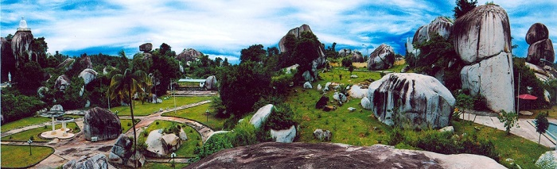

Đôi nét về quần thể Đá Ba Chồng
Quần thể Đá Ba Chồng được biết đến là một trong những quần thể di tích thắng cảnh nổi tiếng tại huyện Định Quán, tỉnh Đồng Nai. Với những khối đá to lớn cùng nhiều hình thù độc đáo, đa dạng khác nhau được hình thành từ hàng triệu năm trước do biến đổi địa chất của trái đất. Nằm giữa khu dân cư vô cùng sầm uất nhưng địa danh này vẫn không mất đi nét đẹp tự nhiên vốn có mà chính điều đó càng làm tôn thêm vẻ đẹp hùng vĩ nơi đây.
Vài nét độc đáo ở Đá Ba Chồng
Những hòn đá ở đây vô cùng đặc biệt, có những hòn đá to đến mức ngỡ tưởng như một ngọn núi lớn. Xung quanh những tảng đá này cây cối cũng mọc um tùm, tạo nên những hang động đầy bí ẩn và càng tôn lên sự hùng vĩ của nơi đây. Ngoài danh thắng Đá Ba Chồng hùng vĩ ra thì nơi đây còn có rất nhiều những địa điểm thú vị khác như ở phía sau trung tâm văn hóa của huyện có rất nhiều những hòn đá tảng với kích cỡ khác nhau. Đặc biệt thú vị là hòn đá to hơn lại nằm chồng lên một hòn đá khác nhỏ hơn rất nhiều.
Ở phía Tây Nam thì bạn có thể ghé tới cụm núi Đá Voi – với hình thú như 2 chú voi lớn đang nằm cạnh nhau để chiêm ngưỡng. Trên đỉnh của một hòn đá có đặt một bức tượng Phật Thích Ca cao hơn 20 mét của chùa Thiên Chơn được xây dựng vào năm 1970. Và hòn đá này được ví là con voi đực, còn hòn đá bên cạnh được gọi là voi cái. Phía dưới chân núi có hang Bạch Hổ - theo truyền thuyết xưa được truyền lại thì nơi đây từng có 1 cặp hổ sinh sống nhưng lại không hề làm hại đến ai. Chúng nằm dưới chân núi Voi Đực để nghe kinh và nghe tiếng gõ mõ. Người dân nơi đây cho rằng đó là hổ Thần và gọi hang động này với cá tên là hang Bạch Hổ.
Lợi ích của việc đi du lịch Sinh Thái
Những lợi ích từ du lịch sinh thái Du lịch sinh thái là gì? Khái niệm về du lịch sinh thái xuất hiện từ nâm 1991 Du lịch sinh thái là loại hình du lịch diễn ra trong các vùng có hệ sinh thái tự nhiên còn bảo tồn khá tốt nhằm mục tiêu nghiên cứu, chiêm ngưỡng, thưởng thức phong cảnh, động thực vật cũng như các giá trị văn hoá hiện hữu.
Cần chuẩn bị gì cho chuyến đi
Một khi lựa chọn du lịch sinh thái - dù là đi tour hay tự túc, điểm đến phổ biến hay hoang sơ, thì khả năng sai sót, nguy hiểm vẫn có thể xảy đến bất kỳ lúc nào. Dưới đây là những nhóm đồ cần thiết để gia đình có một chuyến đi an toàn và trọn vẹn.